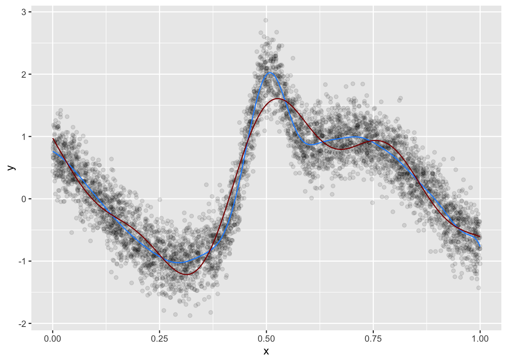

# Define the ELM function
ELM <- function(X, y, hidden_size, activation_function = "sigmoid") {
n <- nrow(X)
d <- ncol(X)
# Initialize the input weights and biases
W <- matrix(rnorm(d * hidden_size), ncol = hidden_size)
b <- rnorm(hidden_size)
# Calculate the hidden layer output
if (activation_function == "sigmoid") {
H <- 1 / (1 + exp(-X %*% W - b))
} else if (activation_function == "relu") {
H <- pmax(0, X %*% W + b)
}
# Calculate the output weights
beta <- solve(H) %*% y
# Return the ELM model
return(list(W = W, b = b, beta = beta, activation_function = activation_function))
}
# Define the function to predict the output
predict <- function(model, X) {
if (model$activation_function == "sigmoid") {
H <- 1 / (1 + exp(-X %*% model$W - model$b))
} else if (model$activation_function == "relu") {
H <- pmax(0, X %*% model$W + model$b)
}
y_pred <- H %*% model$beta
return(y_pred)
}
# Generate some example data
set.seed(123)
X <- matrix(runif(100 * 5), ncol = 5)
y <- rnorm(100)
# Apply the ELM function to the data
hidden_size <- 100
activation_function <- "sigmoid"
model <- ELM(X, y, hidden_size, activation_function)
# Predict the output
y_pred <- predict(model, X)R code implementation of the Extreme Learning Machine (ELM) algorithm
This code defines two functions: ELM and predict. The ELM function takes a data matrix X, a response vector y, the number of hidden units hidden_size, and the activation function activation_function as input and returns an ELM model consisting of the input weights W, the input biases b, the output weights beta, and the activation function. The function first initializes the input weights and biases randomly, then calculates the output of the hidden layer using the specified activation function, and finally calculates the output weights by solving a linear system. The predict function takes an ELM model and a data matrix X as input and returns the predicted output.
In this example, we generate some example data using the runif and rnorm functions, and then apply the ELM function to the data to get the ELM model. Finally, we use the predict function to get the predicted output.
More complex function
elm <- function(X, y, n_hidden=NULL, active_fun=tanh) {
# X: an N observations x p features matrix
# y: the target
# n_hidden: the number of hidden nodes
# active_fun: activation function
pp1 = ncol(X) + 1
w0 = matrix(rnorm(pp1*n_hidden), pp1, n_hidden) # random weights
h = active_fun(cbind(1, scale(X)) %*% w0) # compute hidden layer
B = MASS::ginv(h) %*% y # find weights for hidden layer
fit = h %*% B # fitted values
list(fit= fit, loss=crossprod(fit - y), B=B, w0=w0)
}
# one variable, complex function -------------------------------------------
library(tidyverse); library(mgcv)── Attaching packages ─────────────────────────────────────── tidyverse 1.3.2 ──
✔ ggplot2 3.4.1 ✔ purrr 1.0.1
✔ tibble 3.1.8 ✔ dplyr 1.1.0
✔ tidyr 1.3.0 ✔ stringr 1.5.0
✔ readr 2.1.4 ✔ forcats 1.0.0
── Conflicts ────────────────────────────────────────── tidyverse_conflicts() ──
✖ dplyr::filter() masks stats::filter()
✖ dplyr::lag() masks stats::lag()
Loading required package: nlme
Attaching package: 'nlme'
The following object is masked from 'package:dplyr':
collapse
This is mgcv 1.8-41. For overview type 'help("mgcv-package")'.set.seed(123)
n = 5000
x = runif(n)
# x = rnorm(n)
mu = sin(2*(4*x-2)) + 2*exp(-(16^2)*((x-.5)^2))
y = rnorm(n, mu, .3)
# qplot(x, y)
d = data.frame(x,y)
X_ = as.matrix(x, ncol=1)
test = elm(X_, y, n_hidden=100)
str(test)List of 4
$ fit : num [1:5000, 1] -1.0239 0.7311 -0.413 0.0806 -0.4112 ...
$ loss: num [1, 1] 442
$ B : num [1:100, 1] 217 -608 1408 -1433 -4575 ...
$ w0 : num [1:2, 1:100] 0.35 0.814 -0.517 -2.692 -1.097 ...# qplot(x, y) + geom_line(aes(y=test$fit), color='#1e90ff')
cor(test$fit[,1], y)^2[1] 0.8862518gam_comparison = gam(y~s(x))
summary(gam_comparison)$r.sq[1] 0.8482127d %>%
mutate(fit_elm = test$fit,
fit_gam = fitted(gam_comparison)) %>%
ggplot() +
geom_point(aes(x, y), alpha=.1) +
geom_line(aes(x, y=fit_elm), color='#1e90ff') +
geom_line(aes(x, y=fit_gam), color='darkred')